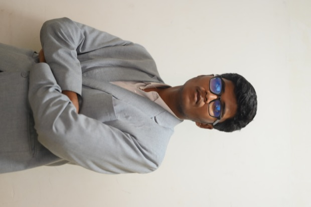
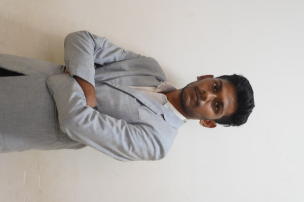
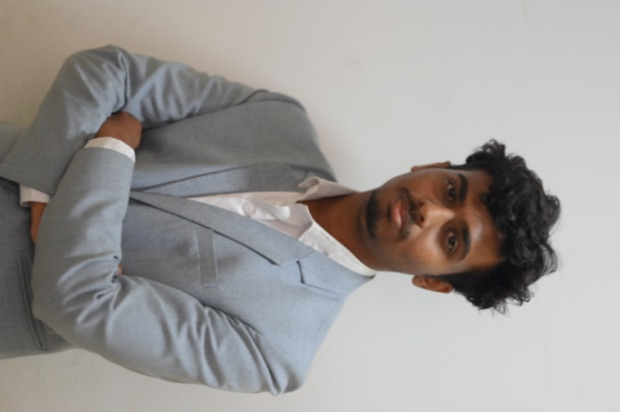

TEAM MEMBER 01VALIDATION

NameMEHNAZ SHERIN Z
RoleValidation & Test Data
DegreeB.E CSE
Logged test runs, result comparison against the simulated model and record keeping.
Automated MCB Short-Circuit Test & Analysis Platform
Six engineers building an automated short-circuit test and waveform-analysis platform for miniature circuit breakers — control, measurement, analysis and the operator interface.





How short-circuit verification is carried out today, and the automated sequence E‑PASS runs from a single operator command.
MCB short-circuit testing requires controlled electrical conditions, accurate impedance configuration, safe fault generation, reliable measurement and repeatable analysis. Manual approaches put the operator inside that loop at every step, which makes runs hard to repeat and the waveform hard to analyse.
One operator command runs the whole sequence: the controller prepares the impedance-limited fault path, closes the contactor, captures current and voltage at high speed, and analyses the waveform before the result reaches the screen.
The captured waveform is split into what repeats and what happens once. Each path is analysed with the tool suited to it, then the features are fused into a single fault signature that describes how the breaker actually interrupted.
Describes the fundamental and its harmonic structure — what frequency content the waveform carries.
Reconstructs a periodic reference from the coefficients, so the measured trace can be compared against expected behaviour.
Localises the fast events in time — when the surge began, when the current collapsed, how strong each was.
How an MCB interrupts a short circuit — the behaviour E‑PASS generates, captures and analyses. Our own bench recording replaces this clip once filming is done.
STM32F401RE-based test control architecture: sequence state machine, impedance selection logic, contactor timing, and hardware safety interlocks kept outside the firmware.
Isolated current and voltage sensing feeding a high-speed acquisition path. ADC with DMA writes straight into a RAM waveform buffer, so the fast fault transient is captured without the CPU in the way.
Local web-based operator interface for test configuration — MCB type, rated current, B/C/D curve, poles, target voltage and current, R–XL setting — plus the result view and digital test report.
Adaptive Hybrid Transient Analysis developed and validated in MATLAB/Simulink: Fourier-series analysis, IFFS reconstruction and DWT transient localisation, fused into one fault signature before porting to Embedded C.
Physical prototype and electrical test setup: the integrated path from HMI to controller, impedance network, fault contactor and MCB under test, with panel layout and isolation barriers.
Scaled-down verification on the 24 V / 15 A isolated bench: repeated runs on the same MCB, captured waveforms compared against the simulated model, and trip timing checked against the expected curve.